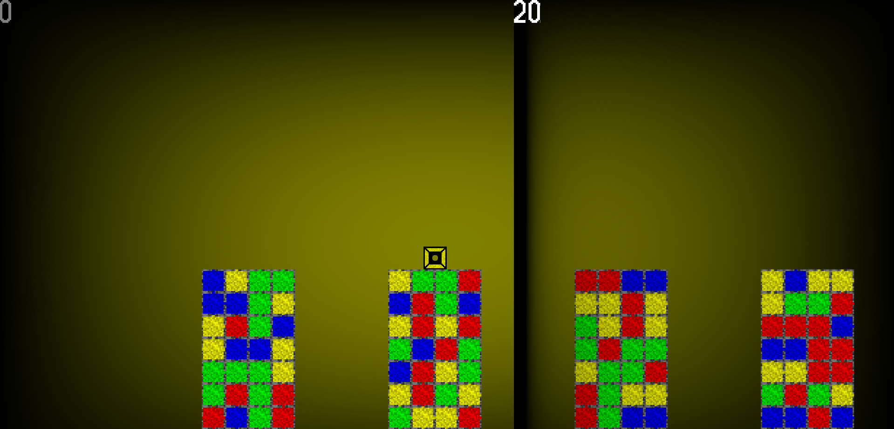
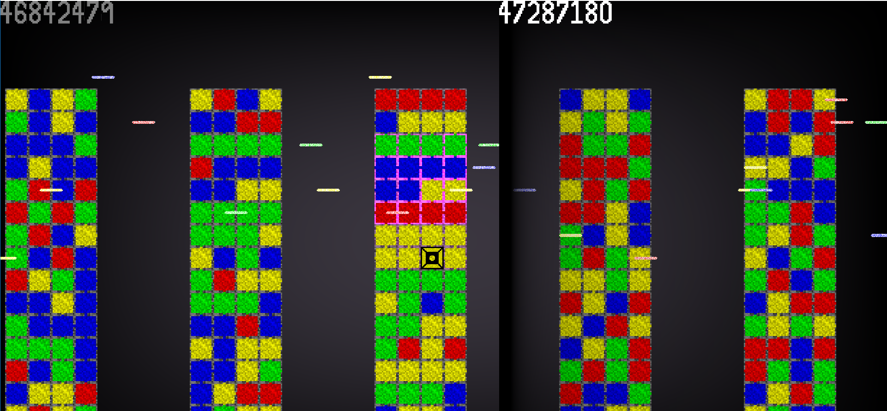

The most true wall is in death
Ahh, the first ludum dare where I knew what I was doing, or so I thought. The theme was combine two incompatible genres, which was a pretty bad theme in my opinion. I decided to combine a match-3 with a platforming game. While I understand what is going on, the rules are too hard to understand for most people playing the game. This time I knew how to use LWJGL, but I still have much to learn when it comes to game design.
The idea is that you jump from pillar to pillar, matching different cubes as you go. You always have a color, your color determines which color of blocks you can pass through, while all of the other ones are solid. When you match 3 colors, they become the color that you are. Your score increases with each match, and increases more the further to the right you are.
There will always be a black wall in front of you. You push it forward by making reaching a higher score.
As your score increases, lasers start firing at you. Each laser has a color, and will change the color of each block they pass through on the tower that you are on. If a laser hits you, it changes your color and the 9 blocks around you, causing you to fall a block.
You loose when your character falls out from under the map
So far this is the only ludum dare where I actually made a post mortem. It adds a new mode that has a second wall that chases you. If the second wall catches up with you, then you fall, because you are all the colors.